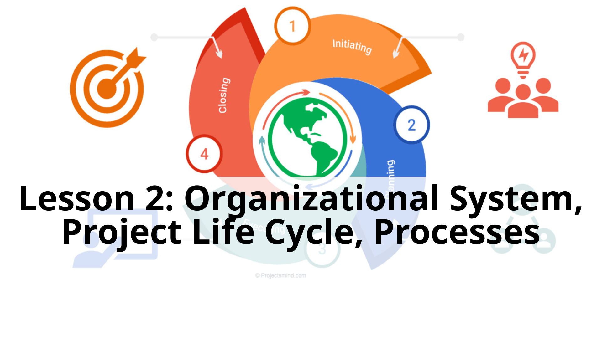
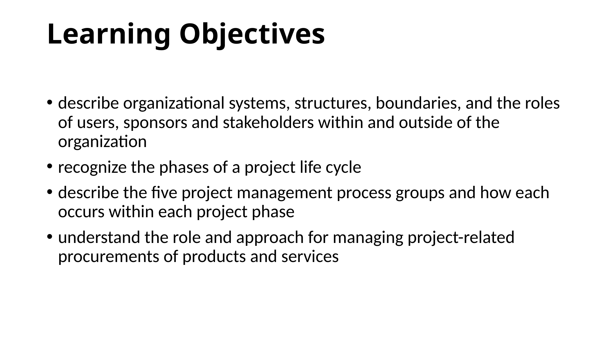
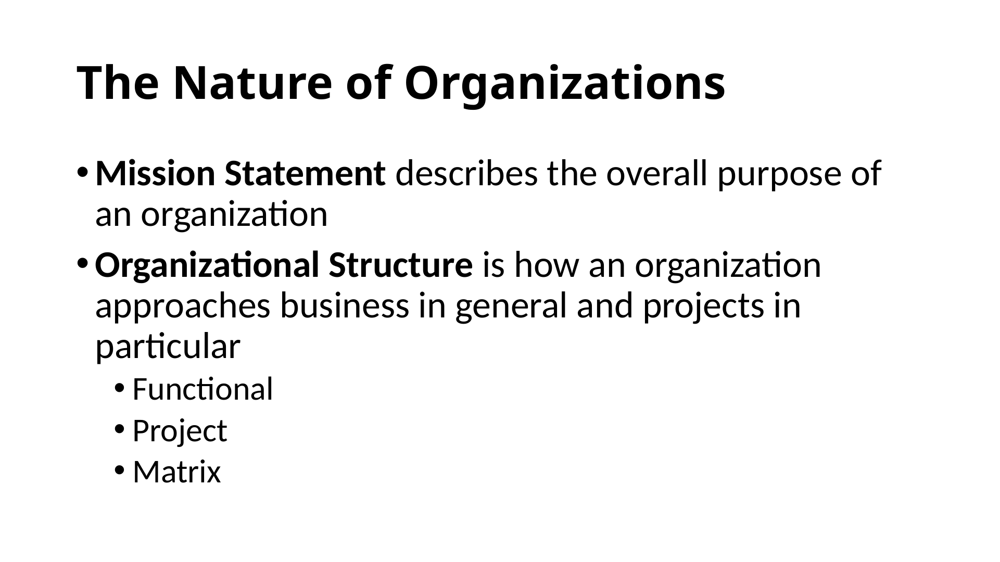
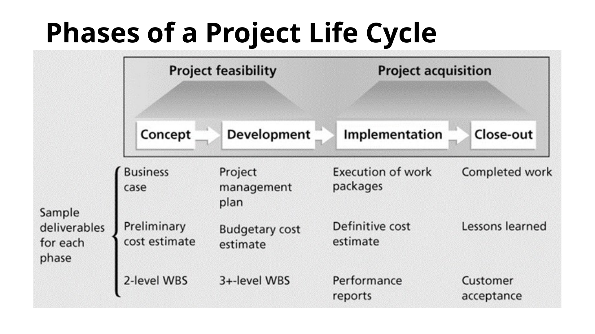
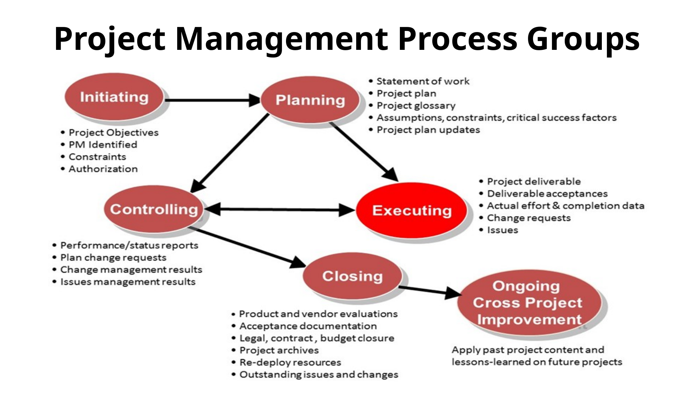

← All lessons
Lesson 2-Projects Life Cycles-Processes-Procurement
← Previous
Next →
Slide text
Speaker notes / extracted notes
Show slide thumbnails

1. Lesson 2: Organizational System, Project Life

2. Learning Objectives

3. The Nature of Organizations

4. Phases of a Project Life Cycle

5. Project Management Process Groups